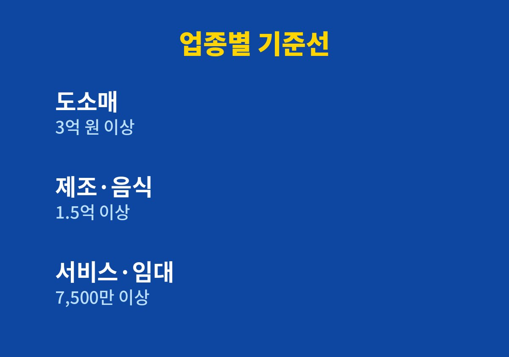
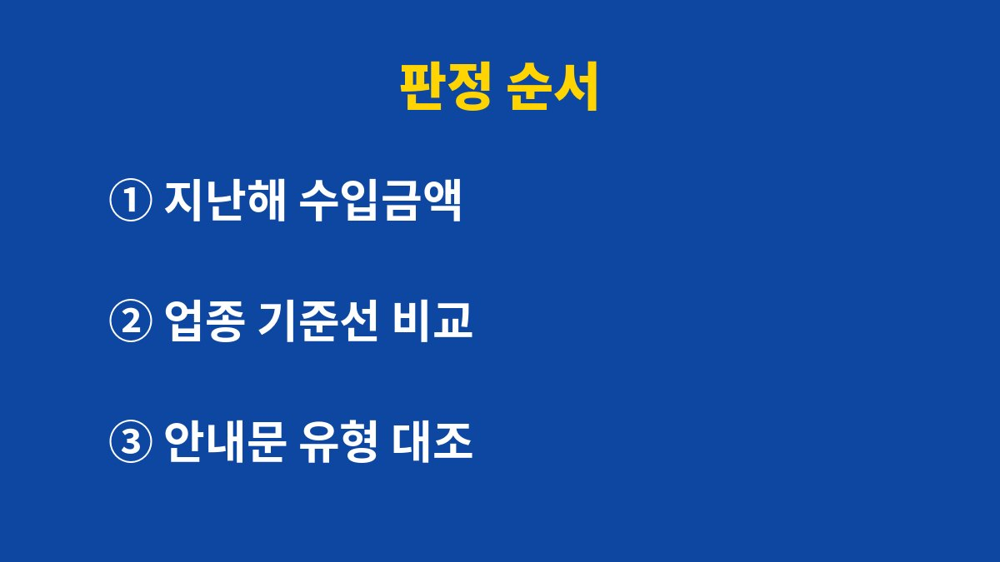

간편장부와 복식부기 중 어느 쪽으로 신고하는지는 직전 연도 수입금액이 업종별 기준선을 넘는지로 정해집니다.
2026년 기준 국세청 안내를 바탕으로, 5월 종합소득세 신고 전에 내 장부 유형을 가려내는 순서와 기장세액공제를 함께 정리했습니다.
장부 이름이 낯설어 세무서 안내문을 열어 보고도 닫아 버리는 분이 많은데, 유형만 알면 해야 할 일은 의외로 단순합니다.
판정에 쓰는 숫자는 올해 쌓이고 있는 매출이 아니라 직전 연도 수입금액입니다.
홈택스에서 지난해 종합소득세 신고서를 열면 수입금액 칸에서 바로 확인할 수 있습니다.
사업을 새로 시작한 해에는 비교할 직전 연도가 없어서 간편장부대상자로 봅니다.
예를 들어 지난해 신고서의 수입금액이 기준선 바로 아래였다면, 올해 매출이 크게 늘었어도 올해 5월 신고는 간편장부대상자 기준으로 합니다.
부가세 신고서의 공급가액과 종합소득세의 수입금액은 면세 매출이나 반품이 섞이면 숫자가 달라질 수 있어서, 판정은 종합소득세 신고서의 수입금액으로 합니다.
변호사, 세무사, 공인회계사 같은 전문직 사업자는 수입금액과 관계없이 처음부터 복식부기의무자입니다.
쇼핑몰이나 음식점처럼 일반 업종이라면 아래 기준선만 보면 됩니다.
| 업종 | 복식부기의무자 기준(직전 연도 수입금액) | 기준 미만이면 |
|---|---|---|
| 도소매업, 농림어업, 광업, 부동산매매업 | 3억 원 이상 | 간편장부대상자 |
| 제조업, 숙박·음식점업, 건설업, 운수업 등 | 1억 5천만 원 이상 | 간편장부대상자 |
| 부동산임대업, 서비스업 등 | 7,500만 원 이상 | 간편장부대상자 |

5월에 받는 종합소득세 신고안내문에도 기장의무 유형이 적혀 있습니다.
표로 판정한 결과와 안내문의 유형을 대조하면 어긋난 곳을 바로 찾을 수 있습니다.
간편장부대상자가 복식부기로 장부를 써서 신고하면 기장세액공제를 받습니다.
산출세액 중 장부로 신고한 사업소득 비율에 해당하는 세금의 20%이고, 한도는 100만 원입니다.
다만 산출세액이 크지 않은 사업자는 공제액이 몇 만 원에 그치는데, 이때는 기장 프로그램이나 세무사 비용이 더 클 수 있습니다.
공제만 보고 복식부기를 고르기보다 연 수입금액과 기장 비용을 같이 놓고 따져 봅니다.
장부를 쓰지 않고 신고하면 무기장가산세가 붙습니다.
산출세액의 20%와 수입금액의 0.07% 중 큰 금액입니다.
직전 연도 수입금액이 4,800만 원 미만이거나 그해에 사업을 시작한 소규모사업자는 대상에서 빠집니다.

매출이 늘었다고 올해부터 복식부기가 되는 것은 아닙니다.
기준선을 넘은 해의 다음 해부터 적용됩니다.
복식부기의무자가 간편장부 양식으로 신고서를 내면 장부 미작성으로 처리될 수 있습니다.
의무자라면 처음부터 복식부기 방식으로 장부를 만들어야 합니다.
통장에 찍힌 금액만으로 비용을 적으면 증빙이 없는 경비로 보아 인정받지 못할 수 있습니다.
세금계산서, 현금영수증, 카드 매출전표 같은 증빙을 함께 보관합니다.
월말에 한꺼번에 몰아서 정리하면 어느 지출이 사업용이었는지 기억이 흐려지니, 매주 한 번 통장과 카드 내역을 맞춰 두는 쪽이 덜 힘듭니다.
이번 주에는 홈택스에서 지난해 수입금액 하나만 확인합니다.
복식부기의무자에 해당하거나 유형이 헷갈리면 세무서 납세자 상담이나 국세상담센터 126번에 문의하는 편이 빠릅니다.
참고 자료: 국세청 「종합소득세 장부 작성(기장) 및 신고 안내」(2026년 11월 확인)
※ 본 글은 2026년 기준 공개 자료를 바탕으로 정리한 정보이며, 세금·금융 상품 선택은 본인 상황에 맞게 전문가와 확인하시길 바랍니다.